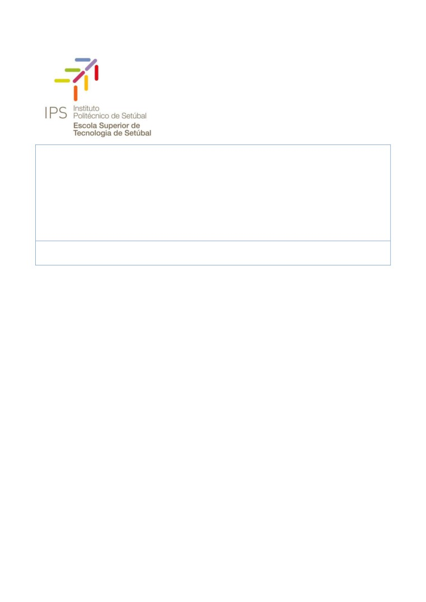
Programação Avançada
2018/2019
Licenciatura em Engª. Informática
Aplicação para Emissão de Bilhete-Percurso num Parque Biológico
Docente: Bruno Silva
Realizado por:
140221053 - Jorge Silva
150221006 - João da Silva Gomes
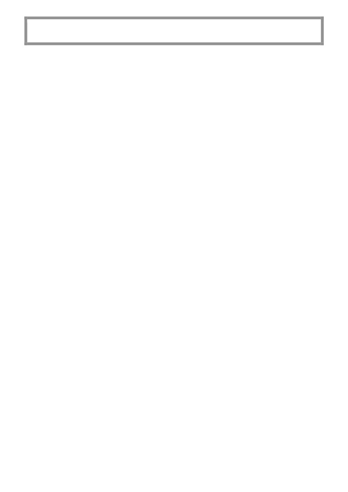
Aplicação para Emissão de Bilhete - Percurso num Parque Biológico
Índice
Introdução
3
TADs implementadas
4
Diagrama de classes
5
Javadoc
9
Padrões de software
10
Refactoring
12
Libraries/JarFiles utilizados
28
Tecnologias utilizadas
29
Pág. 2
Aplicação para Emissão de Bilhete - Percurso num Parque Biológico
Introdução
Pretende-se desenvolver uma aplicação que permita gerar percursos a pé e de
bicicleta dentro de um parque biológico. A aplicação disponibiliza informação sobre o
preço total a pagar pelo percurso selecionado e permite ainda a emissão de bilhetes e
respetiva fatura.
O parque biológico é constituído por vários pontos de interesses, pontos esses
que estão conectados ou por caminhos, ou por pontes; os caminhos podem ser
percorridos em qualquer sentido, mas as pontes só podem ser percorridas num
sentido. Existem ainda conexões que não permitem a circulação de bicicletas. Cada
conexão tem um custo, e uma distância associada.
Cada percurso inicia e termina no ponto de entrada do parque, e poderá passar
por vários pontos de interesse selecionados pelo utilizador. O utilizador deverá poder
calcular o seu percurso de forma a minimizar a distância, ou o custo do mesmo.
Pág. 3
Aplicação para Emissão de Bilhete - Percurso num Parque Biológico
TADs implementadas
No nosso projeto tivemos de recorrer à utilização do algoritmo Dijkstra, este
calcula o custo mínimo do vértice raiz para os demais. Assim sendo, usámos este
algoritmo sobre um dígrafo orientado com a raiz no nosso ponto de entrada, os
restantes pontos do nosso mapa sendo os vértices do grafo e os caminhos/pontes as
diversas arestas orientadas.
Pág. 4
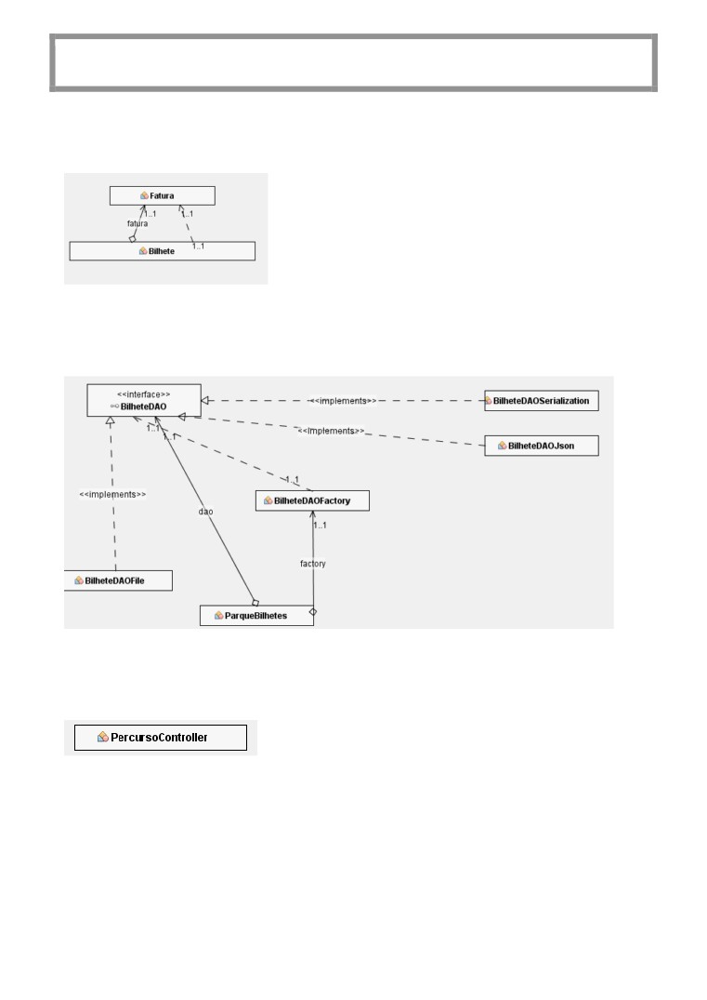
Aplicação para Emissão de Bilhete - Percurso num Parque Biológico
Diagrama de classes
1- BILHETE
Fig.1
2- DAO
Fig.2
3- MVC CONTROLLER
Fig.3
Pág. 5
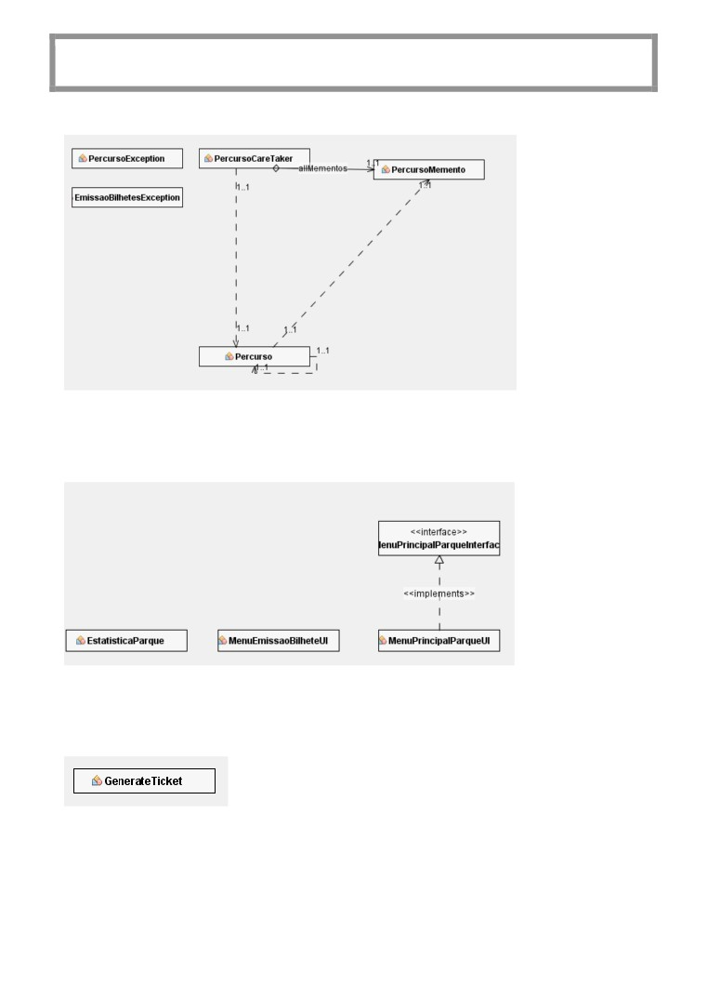
Aplicação para Emissão de Bilhete - Percurso num Parque Biológico
4- MVC MODELS
Fig.4
5- MVC VIEWS
Fig.5
6- PDFGenerator
Fig.6
Pág. 6
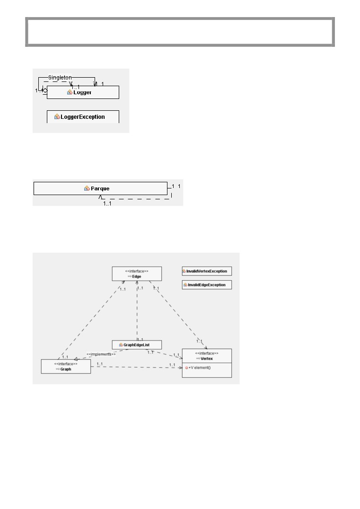
Aplicação para Emissão de Bilhete - Percurso num Parque Biológico
7- SINGLETON
Fig.7
8- MAIN
Fig.8
9- DIGRAPH GRAPH
Fig.9
Pág. 7
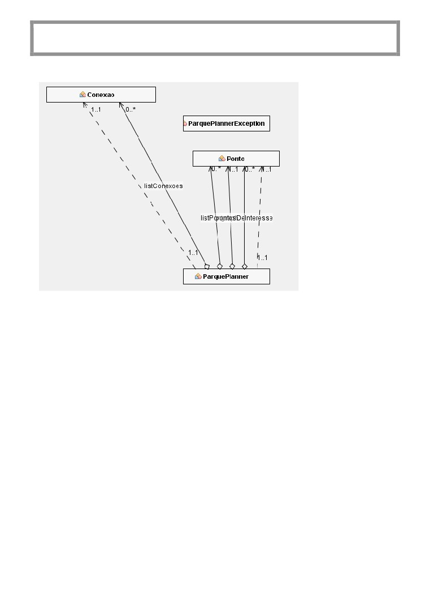
Aplicação para Emissão de Bilhete - Percurso num Parque Biológico
10- DIGRAPH MODEL
Fig.10
Pág. 8
Aplicação para Emissão de Bilhete - Percurso num Parque Biológico
Javadoc
Bilhete - Classe que representa um bilhete com a informação do percurso associado.
Fatura - Classe que representa uma fatura associada a um bilhete.
BilheteDAOFactory - Classe que cria instâncias de bilhetes.
BilheteDAOFile - Classe File onde se cria as tabelas manualmente para inserir o bilhete.
BilheteDAOJson- Classe que guarda o bilhete como objecto através da sua coleção de pares de
valores.
BilheteDAOSerialization - Serialização de uma classe, é ativada pela classe que implementa a
interface do bilhete.
PercursoController - Classe controller do percurso.
Percurso - Classe model para o percurso.
PercursoCareTaker - Classe Care Taker para guardar e recuperar os estados do percurso.
PercursoMemento - Classe Memento do MVC.
EstatisticaParque - Class View das estatísticas do parque.
MenuEmissaoBilheteUI - Classe view do menu de emissão de bilhete.
MenuPrincipalParqueUI - Classe view do menu principal do parque.
GenerateTicket - Classe que gera os PDF's de fatura e bilhete.
Conexao - Classe modelo do algoritmo Dijkstra que gere o percurso atual com todos os pontos de
interesse.
ParquePlanner - Classe modelo que gere o parque.
Ponto - Classe representativa de um ponto do grafo.
Pág. 9
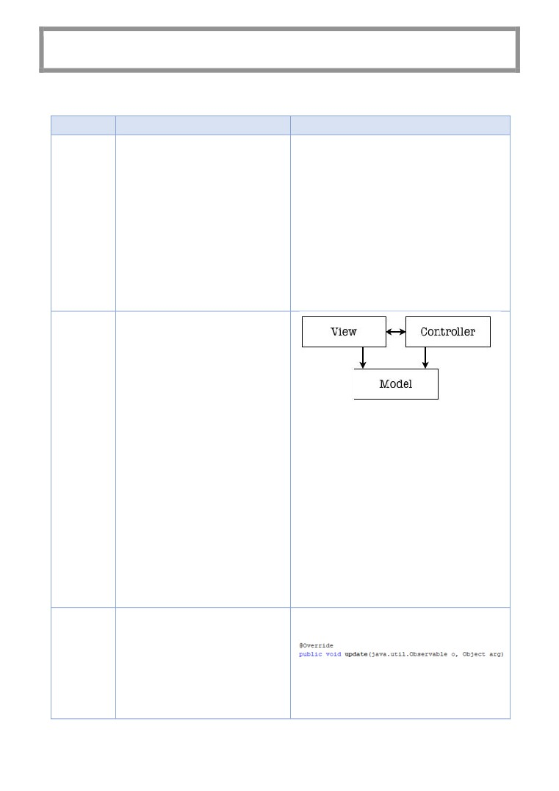
Aplicação para Emissão de Bilhete - Percurso num Parque Biológico
Padrões de software
Nome
Definição
Utilização
DAO é um padrão de projetos onde
um objeto:
• provê uma interface que
Padrao que guarda o Bilhete como objecto, e
abstrai o acesso a dados;
todos os seus atributos.
Data Acess
• lê e grava a partir da origem
Tipos Implementados:
Object
de dados (banco de dados,
1. BilheteDAOFile
(DAO)
arquivo, memória, etc.);
2. BilheteDAOJson
• encapsula o acesso aos
3. BilheteDAOSerialization
dados, de forma que as
demais classes não
precisam saber sobre isso.
que separa a representação da
Componentes Principais
informação da interação do usuário
Model
Models:
View
• Percurso
Controler
componentes maiores
Views:
(MVC)
• MenuPrincipalParqueUI
código e desenvolvimento paralelo
• MenuEmissaoBilheteUI
de maneira eficiente.
Controller:
• PercursoController
MVC é uma aqutectura entre camadas em
que no nosso caso, o percurso é o modelo,
que é controlado pelo percursoController
que por sua vez tem as views representadas.
Observable: ParquePlanner
define uma dependência um-para-
Observer: MenuPrincipalParqueInterface
muitos entre objetos de modo a que
Observer
quando um objeto muda o estado,
todos os seus dependentes são
O modelo parquePlanner é o modelo que
notificados
e
atualizados
está a ser observado e manipulado pela view
automaticamente.
que é o observador
Pág. 10
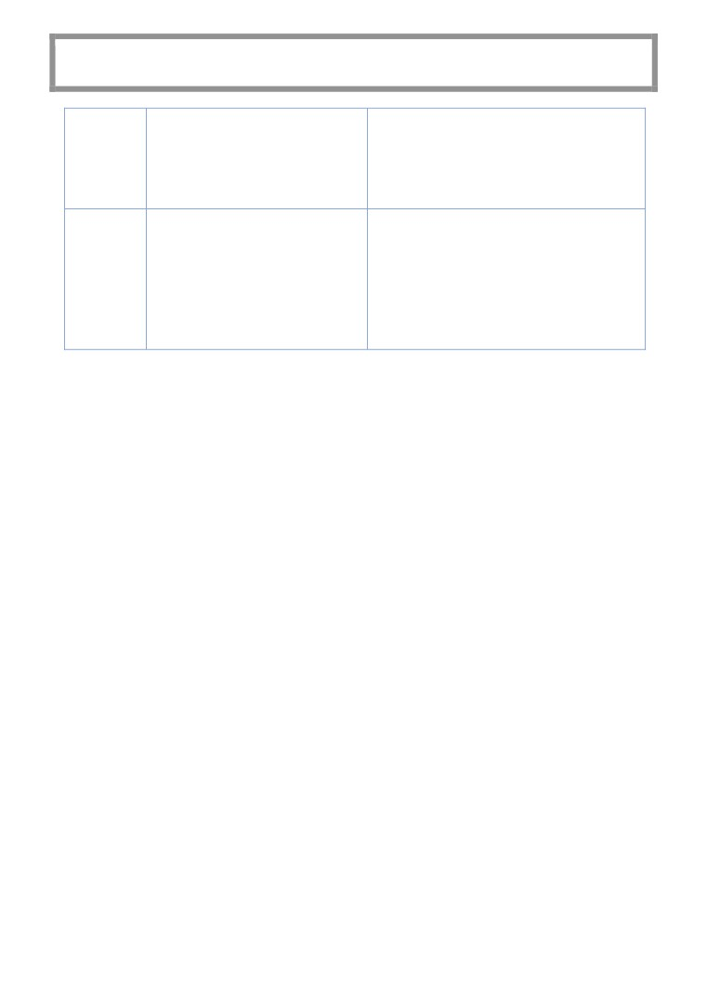
Aplicação para Emissão de Bilhete - Percurso num Parque Biológico
Visto que na aplicação precisamos de uma
garante a existência de apenas uma
infraestrutura de log de dados,
Singleton
implementamos assim uma classe do padrão
um ponto global de acesso ao
singleton. Desta forma existe apenas um
objeto responsável pelo logger.
Padrão de projeto de software que
permite armazenar o estado interno
de um objeto em um determinando
Utilizamos para guardar o estado da lista de
Memento
momento, para que seja possível
pontos de interesse escolhida pelo utilizador
retorná-lo a este estado, sem que
isso cause problemas com o
encapsulamento.
Pág. 11
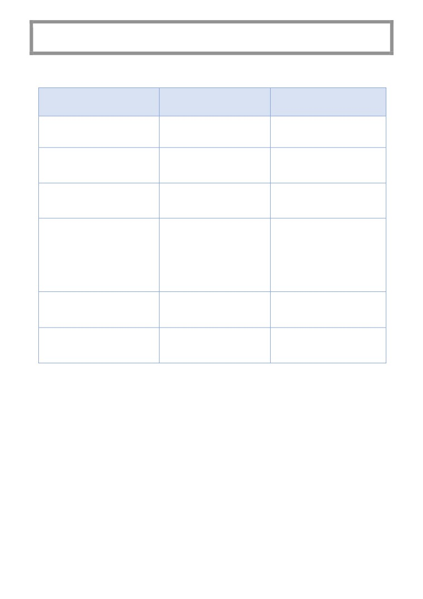
Aplicação para Emissão de Bilhete - Percurso num Parque Biológico
Refactoring
Tipos de Bad-smells
Número de situações
Técnicas de
Refactoring
Extract Method, Extract Class,
Duplicated Code
2
Pull Up Method, Form
Template Method
Collapse Hierarchy, Inline
Speculative Generality
1
Class, Remove Parameter,
Rename Method
Extract Method, Replace Temp
Long Method
3
with Query
Replace Conditional with
Polymorphism, Replace Type
Code with Subclasses, Replace
Switch Statments
1
Type Code with State/Strategy,
Replace Parameter with
Explicit Methods, Introduce
Null Objects
Delete unused code and
Dead Code
5
unneeded files
Extract Class, Introduce Null
Temporary Field
1
Object
Pág. 12
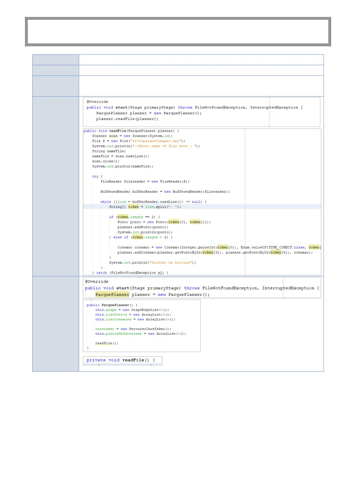
Aplicação para Emissão de Bilhete - Percurso num Parque Biológico
Bad smell
Explicação
Técnica de
refactoring
Antes
refactoring
Após
refactoring
Pág. 13
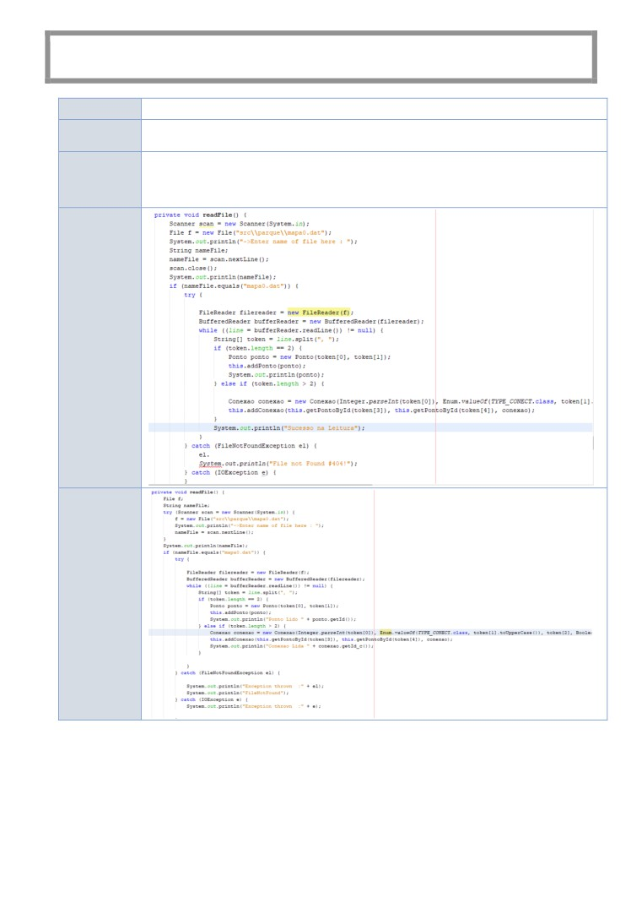
Aplicação para Emissão de Bilhete - Percurso num Parque Biológico
Speculative Generality
Bad smell
Quando existe uma classe, um método ou um parâmetro não utilizado.
Explicação
Neste caso estávamos a fazer o try catch mal não passando a messagem do erro.
Técnica de
Introduce Assertion- Pedaço de código assume alguma coisa sobre o estado do
refactoring
programa. Fazer com que a assunção seja explicita consoante a asserção.
Antes
refactoring
Após
refactoring
Pág. 14
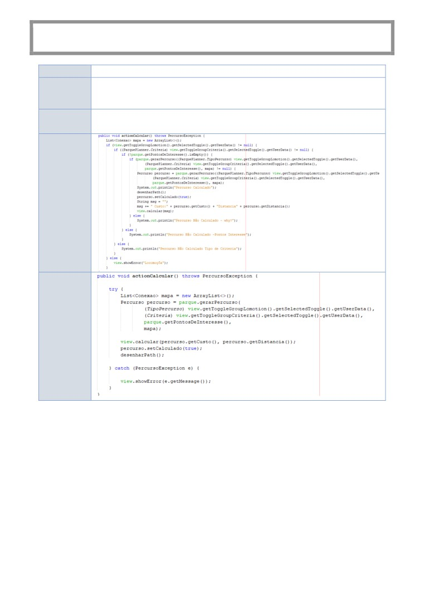
Aplicação para Emissão de Bilhete - Percurso num Parque Biológico
Bad smell
Long method ; Switch Statments
Long method-Um método com muitas linhas de código;
Explicação
Switch Statments- Quando se possui um operador switch ou uma sequência de
instruções if.
Técnica de
Replace Error Code with Exception- Método que retorna mensagem de erro com
em vez disso retorna a exceção e o tratamento dela com a View.showError().
refactoring
Antes
refactoring
Após
refactoring
Pág. 15
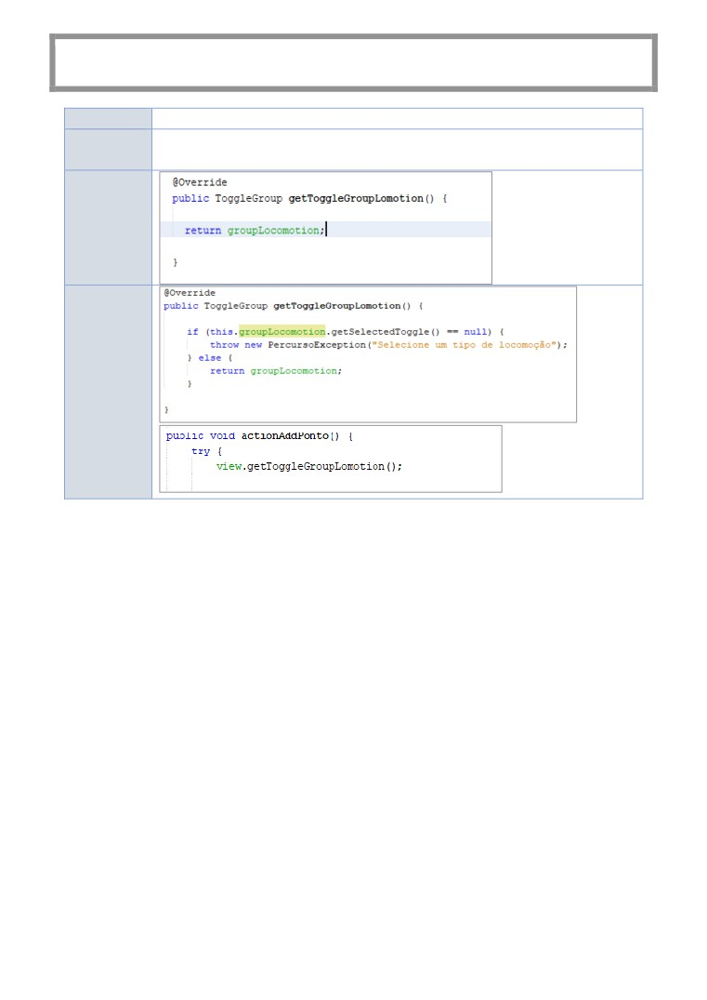
Aplicação para Emissão de Bilhete - Percurso num Parque Biológico
Bad smell
Técnica de
Replace Error Code with Exception
refactoring
Antes
refactoring
Após
refactoring
Pág. 16
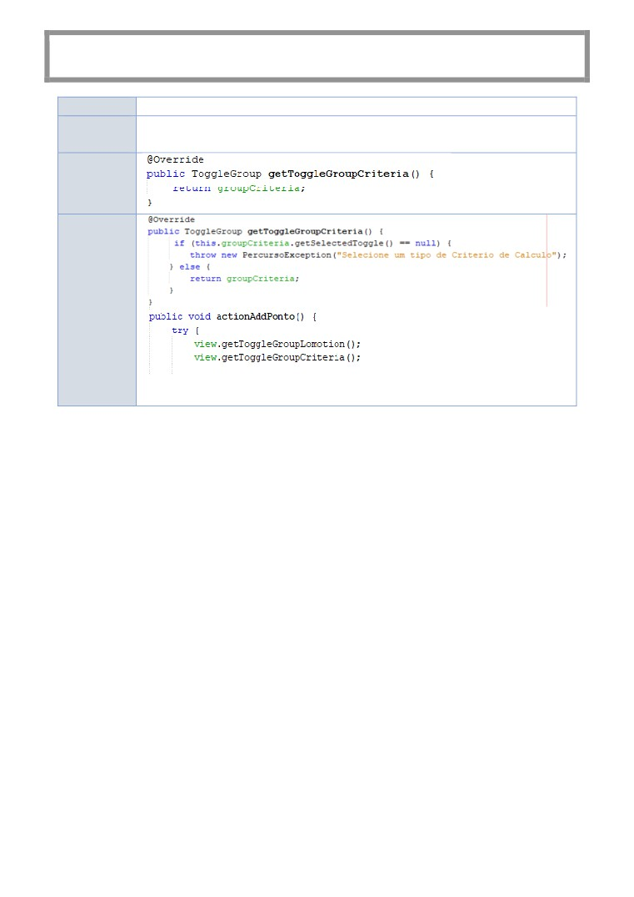
Aplicação para Emissão de Bilhete - Percurso num Parque Biológico
Bad smell
Técnica de
Replace Error Code with Exception
refactoring
Antes
refactoring
Após
refactoring
Pág. 17
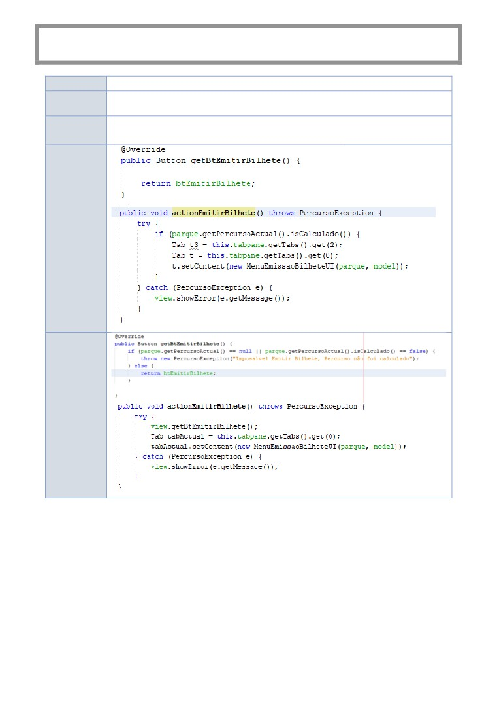
Aplicação para Emissão de Bilhete - Percurso num Parque Biológico
Bad smell
Dead Code - Linha de código que nunca é utilizada
If dentro de try catch , impossibilidade de capturar o erro e trata-lo, Assim
Explicação
retiramos o if e tratamos o erro com a view.
Técnica de
Move Method- movemos a captura de erro no getBtEmitirBilhete
refactoring
Antes
refactoring
Após
refactoring
Pág. 18
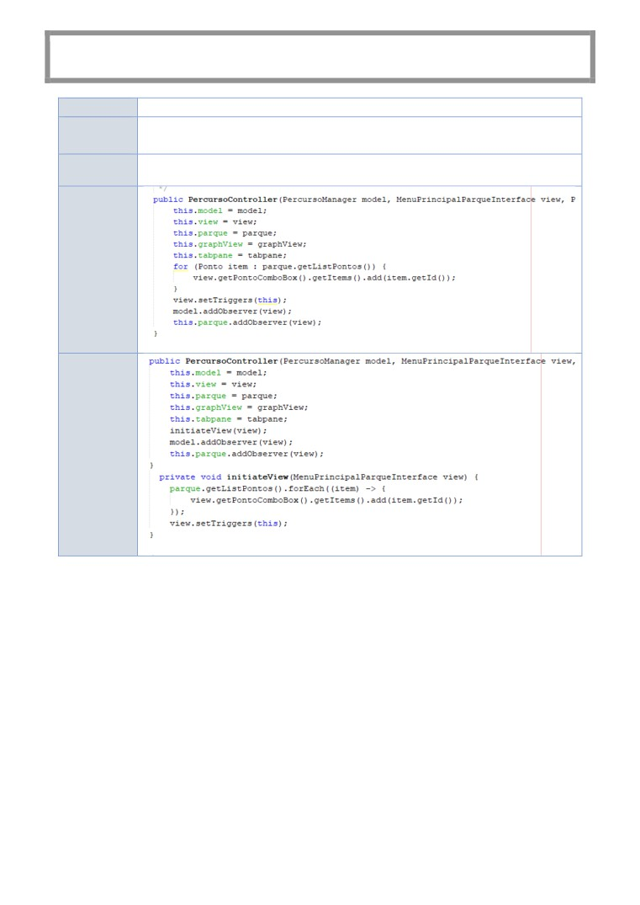
Aplicação para Emissão de Bilhete - Percurso num Parque Biológico
Bad smell
Técnica de
Move Method
refactoring
Removemos o ciclo for dentro do contructor e criamos o metodo que é
Explicação
responsavél por adicionar pontos à comboBox.
Antes
refactoring
Após
refactoring
Pág. 19
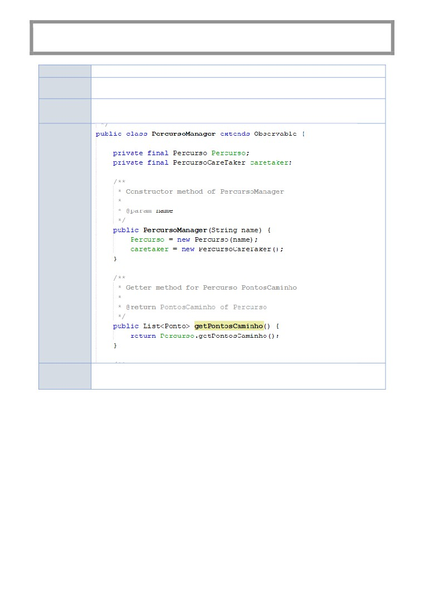
Aplicação para Emissão de Bilhete - Percurso num Parque Biológico
Bad smell
Dead Code
PercursoManager class que se tornou obsoleta na nossa implementação, pois não
Explicação
iremos alterar o percurso final depois de criado.
Técnica de
Class que não é mais utilizada pois tornou-se obsoleta.
refactoring
Antes
refactoring
Após
Eliminada a classe inutilizada.
refactoring
Pág. 20
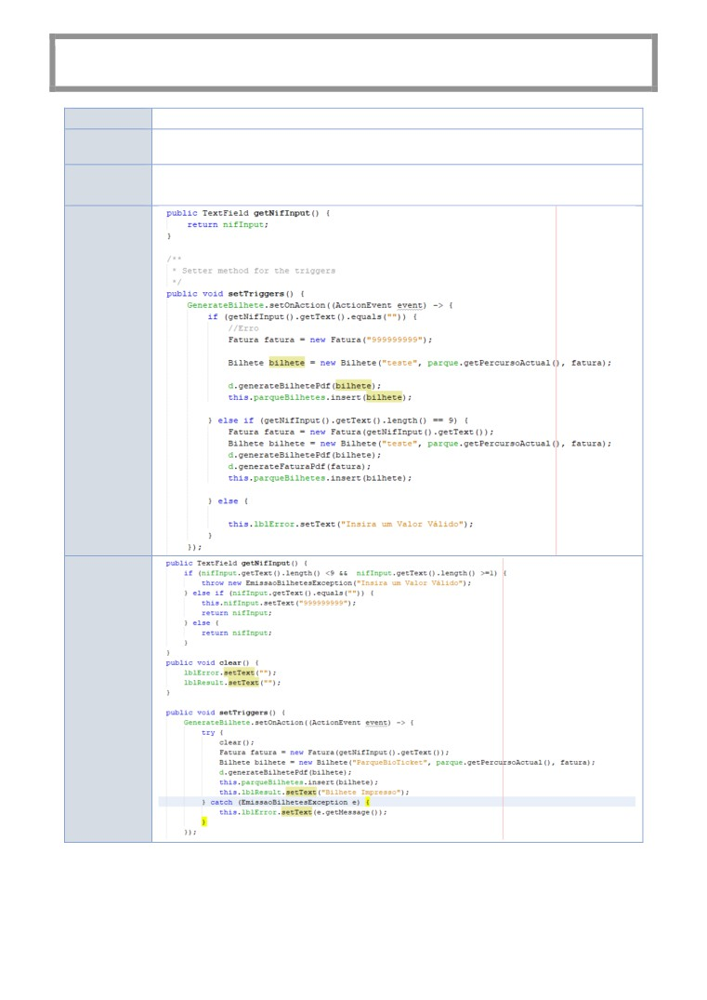
Aplicação para Emissão de Bilhete - Percurso num Parque Biológico
Bad smell
Dupicated code
Definir as condiçoes no metodo getNifInput() para capturar e tratar os erros na
Explicação
acção do generateBilhete()
Técnica de
Extract Mehod-Mover o codigo para um novo metodo separado e substituir o
código por uma chamada para o novo metodo
refactoring
Antes
refactoring
Após
refactoring
Pág. 21
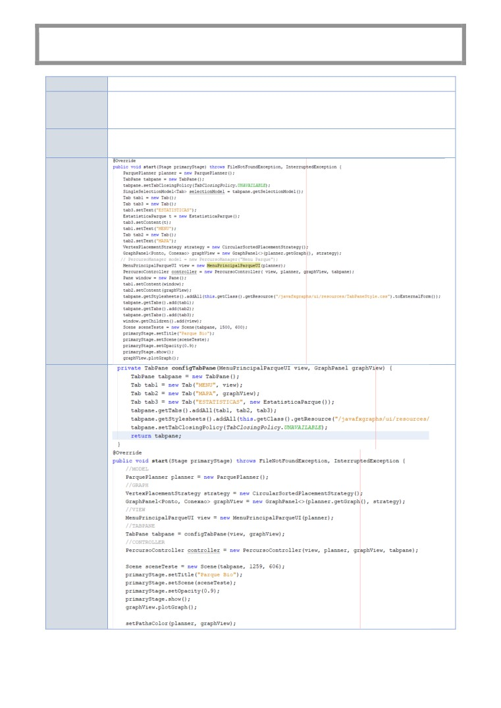
Aplicação para Emissão de Bilhete - Percurso num Parque Biológico
Bad smell
Long Method
Ao observarmos o metodo start do main, conseguimos ver bastante
Explicação
desorganização e um metodo bastante longo, o que nos levou a fragmentar o
codigo
Técnica de
Extract Method- Mover o codigo para um novo metodo separado e substituir o
código por uma chamada para o novo metodo
refactoring
Antes
refactoring
Após
refactoring
Pág. 22
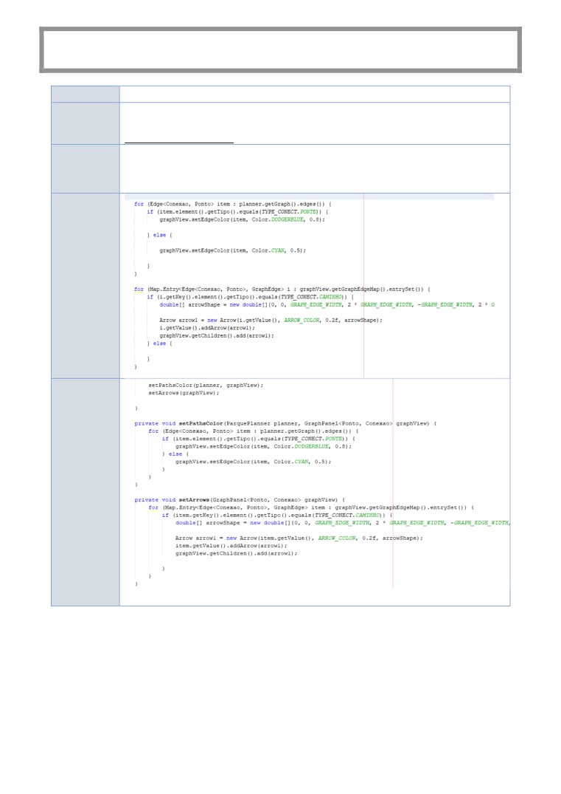
Aplicação para Emissão de Bilhete - Percurso num Parque Biológico
Bad smell
Long Method
O metodo estava confuso e demasiado longo logo fragmentamos o codigo e
Explicação
fizemos uma chamada aos novos metodos(setPathsColor(planner, graphView);
setArrows(graphView);) no start()
Técnica de
Extract Method- Mover o codigo para um novo metodo separado e substituir o
código por uma chamada para o novo metodo
refactorin
g
Antes
refactorin
g
Após
refactorin
g
Pág. 23
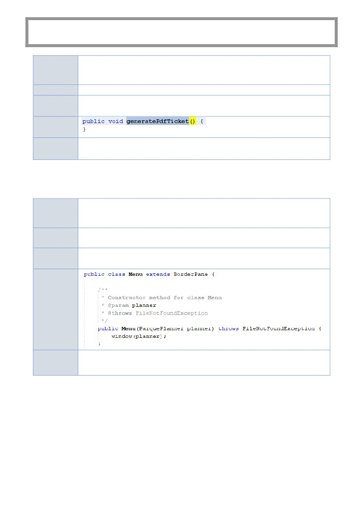
Aplicação para Emissão de Bilhete - Percurso num Parque Biológico
Dead Code
Bad smell
Explicação
Excluir o código não utilizado
Técnica de
Metodo que não é mais utilizado pois tornou-se obsoleto.
refactoring
Antes
refactoring
Após
Eliminado o método inutilizado.
refactoring
Dead Code
Bad smell
Explicação
Class que se tornou obsoleta ao nosso padrão de M.V.C.
Técnica de
Class que não é mais utilizada pois tornou-se obsoleta
refactoring
Antes
refactoring
Após
Eliminada a classe inutilizada.
refactoring
Pág. 24
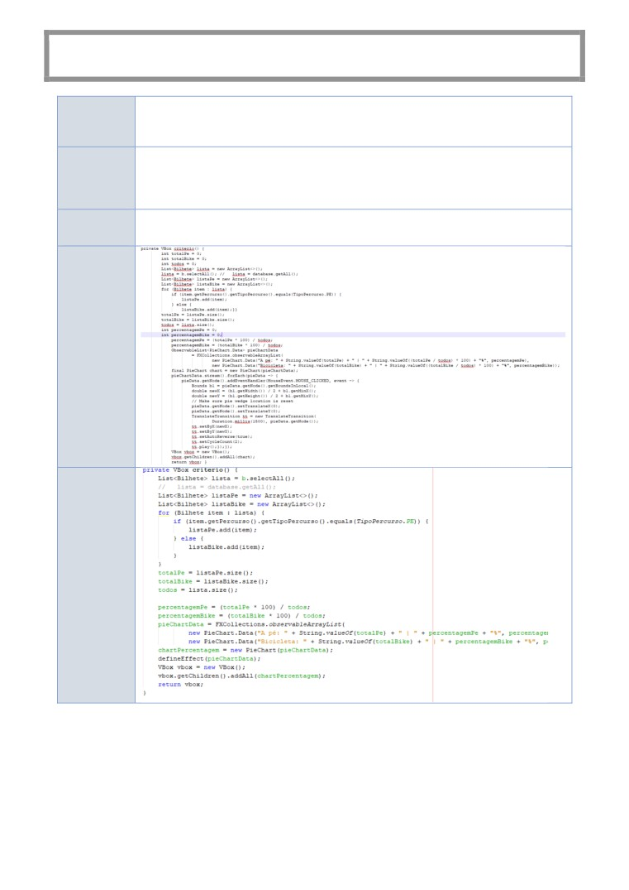
Aplicação para Emissão de Bilhete - Percurso num Parque Biológico
Temporary Field
Bad smell
Campos temporários são criados para uso em um algoritmo que requer uma
grande quantidade de entradas. Portanto, em vez de criar um grande número de
Explicação
parâmetros no método, decidimos criar campos para esses dados na classe. Esses
campos são usados apenas no algoritmo e não são usados o resto do tempo.
Técnica de
Criar atributos de class
refactoring
Antes
refactoring
Após
refactoring
Pág. 25
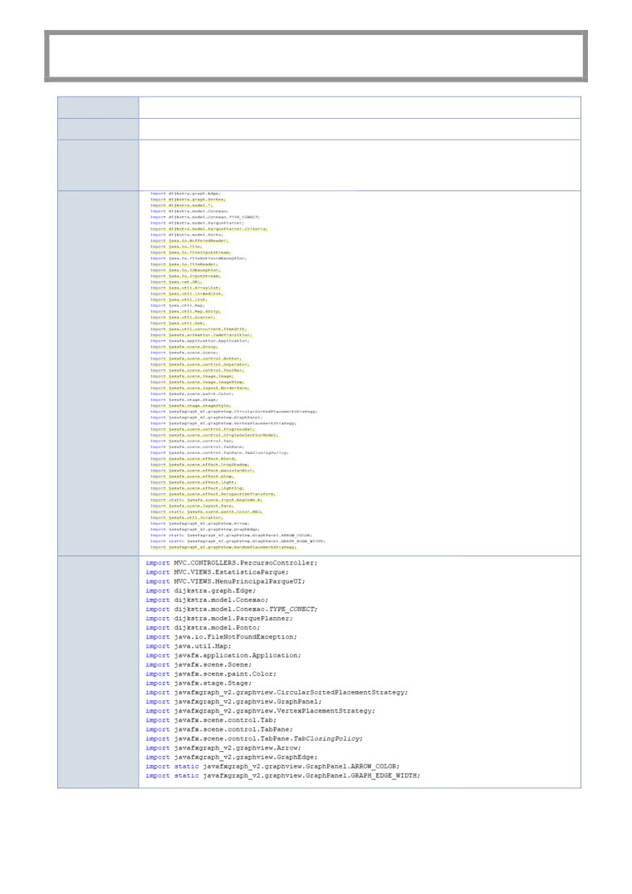
Aplicação para Emissão de Bilhete - Percurso num Parque Biológico
Bad smell
Dead Code-Unused Parameter
Explicação
Reparámos que existiam vários imports desnecessários e inutilizados
Técnica de
Remove Parameter
refactoring
Antes
refactoring
Após
Refactoring
Pág. 26
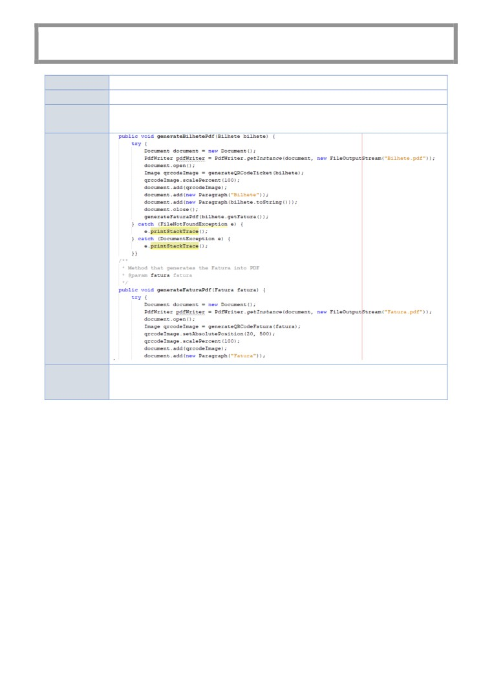
Aplicação para Emissão de Bilhete - Percurso num Parque Biológico
Bad smell
Duplicated Code
Explicação
Técnica de
refactoring
Antes
refactoring
Após
refactoring
Pág. 27
Aplicação para Emissão de Bilhete - Percurso num Parque Biológico
Libraries/JarFiles utilizados
Estão na pasta de Jar_Files:
• gson-2.3.1 - Utilizado para o DAO BilheteDAOJson
• itextpdf-5.5.4 - Utilizado gerar o pdf e o QR code
• sqlite-jdbc-3.21.0 - Utilizado para o DAO
Pág. 28
Aplicação para Emissão de Bilhete - Percurso num Parque Biológico
Tecnologias utilizadas
calculados.
Pág. 29